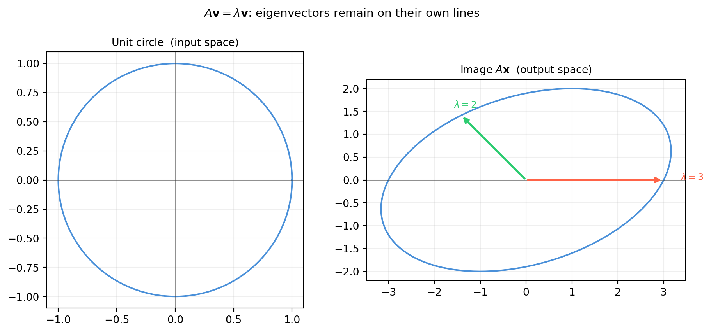
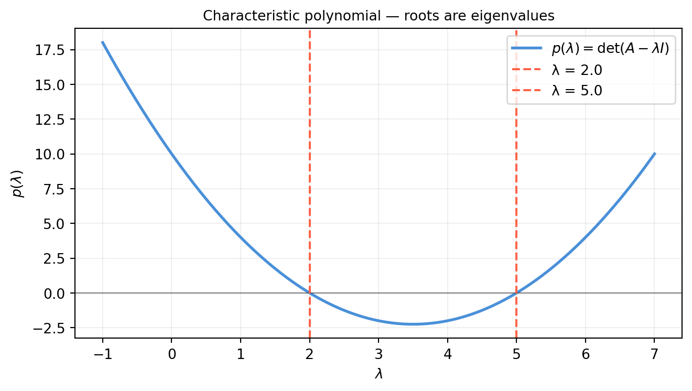
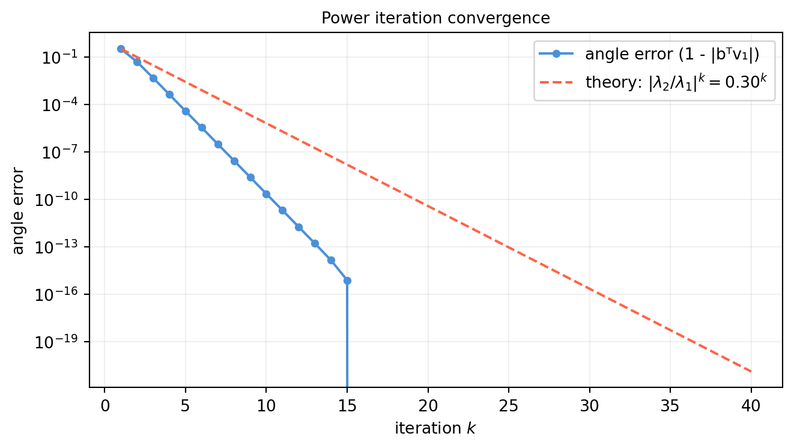
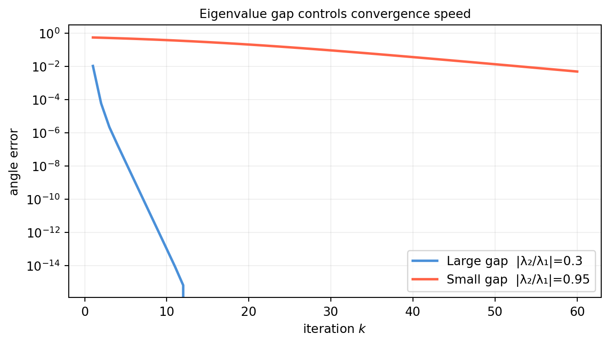

Every matrix \(A\) transforms vectors — rotating, stretching, and shearing the entire space. But hidden inside almost every matrix are a handful of privileged directions that the transformation leaves unchanged in direction. Multiply a vector in one of those directions by \(A\) and you get back a scalar multiple of the same vector:
\[A\mathbf{v} = \lambda\,\mathbf{v}.\]
The vector \(\mathbf{v}\) is an eigenvector of \(A\); the scalar \(\lambda\) is the corresponding eigenvalue. The prefix eigen is German for “own” or “characteristic” — these are the matrix’s own, intrinsic directions.
Why do they matter?
PCA. The principal components of a data cloud are the eigenvectors of the covariance matrix. The eigenvalues are the variances along those directions.
Stability of dynamical systems. Whether a robot joint settles or oscillates depends on whether \(|\lambda| < 1\) for the system’s state-transition matrix.
Graph algorithms. PageRank is the dominant eigenvector of a link matrix.
Spectral decomposition and SVD. Eigenvalues are the foundation of every matrix factorization in Part VI.
13.1.1 The Geometric Picture
Apply a \(2\times 2\) matrix to every vector on the unit circle. The result is an ellipse. The semi-axes of that ellipse point along the eigenvector directions; their lengths equal \(|\lambda|\).
import numpy as npimport matplotlib.pyplot as pltA = np.array([[3., 1.], [0., 2.]]) # shape (2, 2) — upper-triangular: eigenvalues are 3 and 2# Unit circletheta = np.linspace(0, 2* np.pi, 300)circle = np.vstack([np.cos(theta), np.sin(theta)]) # shape (2, 300)# Image of the unit circle under Aellipse = A @ circle # shape (2, 300)# True eigenvectors via numpyvals, vecs = np.linalg.eig(A) # vals shape (2,), vecs shape (2, 2)fig, axes = plt.subplots(1, 2, figsize=(10, 4.5))for ax, data, title inzip(axes, [circle, ellipse], ['Unit circle (input space)', r'Image $A\mathbf{x}$(output space)']): ax.plot(data[0], data[1], color='#4a90d9', lw=1.5) ax.axhline(0, color='#333333', lw=0.4, alpha=0.5) ax.axvline(0, color='#333333', lw=0.4, alpha=0.5) ax.set_aspect('equal') ax.grid(True, alpha=0.2) ax.set_title(title, fontsize=10)# Draw eigenvector directions in output spaceax = axes[1]colors = ['tomato', '#2ecc71']for i, (lam, v) inenumerate(zip(vals, vecs.T)): scale = lam # eigenvalue scales the eigenvector ax.annotate('', xy=(v[0] * scale, v[1] * scale), xytext=(0, 0), arrowprops=dict(arrowstyle='->', color=colors[i], lw=2)) ax.text(v[0] * scale *1.12, v[1] * scale *1.12,rf'$\lambda={lam:.0f}$', color=colors[i], fontsize=9)plt.suptitle(r'$A\mathbf{v}=\lambda\mathbf{v}$: eigenvectors remain on their own lines', fontsize=11)plt.tight_layout()plt.show()

Notice that the two annotated arrows in the output plot lie exactly on the axes through the origin where the ellipse is “pointed.” These are the eigenvector directions. Every other vector gets deflected off its original line; only eigenvectors stay on their lines.
13.1.2 When Is a Vector an Eigenvector?
\(A\mathbf{v}=\lambda\mathbf{v}\) holds if and only if \(A\mathbf{v}\) and \(\mathbf{v}\) are parallel (same or opposite direction, scaled by \(|\lambda|\)). Equivalently, \(A\mathbf{v} - \lambda\mathbf{v} = \mathbf{0}\), i.e.
For a nonzero \(\mathbf{v}\) to satisfy this, the matrix \((A-\lambda I)\) must be singular — it must have a nontrivial null space.
This is the key observation that drives all eigenvalue computation: find the scalars \(\lambda\) that make \(A-\lambda I\) singular.
import numpy as npA = np.array([[3., 1.], [0., 2.]]) # shape (2, 2)# Check a candidate eigenvector by handv = np.array([1., 0.]) # shape (2,) — candidate for lambda = 3print("A @ v =", A @ v) # should equal 3*vprint("3 * v =", 3* v)print("(A-3I) @ v =", (A -3*np.eye(2)) @ v) # should be zeroprint()w = np.array([1., -1.]) # shape (2,) — candidate for lambda = 2w = w / np.linalg.norm(w)print("A @ w =", (A @ w).round(4))print("2 * w =", (2* w).round(4))
A @ v = [3. 0.]
3 * v = [3. 0.]
(A-3I) @ v = [0. 0.]
A @ w = [ 1.4142 -1.4142]
2 * w = [ 1.4142 -1.4142]
13.1.3 Scaling and the Eigenspace
If \(\mathbf{v}\) is an eigenvector for \(\lambda\), so is \(c\mathbf{v}\) for any nonzero scalar \(c\):
All residuals are near machine precision — numerical confirmation that numpy’s eigenvectors satisfy the definition.
13.1.5 Exercises
13.1.1 For \(A = \begin{bmatrix}4 & 0 \\ 0 & -2\end{bmatrix}\), identify the eigenvectors and eigenvalues by inspection (no computation needed). Why is every axis-aligned vector an eigenvector of any diagonal matrix?
13.1.2 If \(\mathbf{v}\) is an eigenvector of \(A\) with eigenvalue \(\lambda\), show that \(\mathbf{v}\) is also an eigenvector of \(A^2\). What is the corresponding eigenvalue?
13.1.3 Can \(\mathbf{0}\) (the zero vector) be an eigenvector? Why does the definition require \(\mathbf{v} \neq \mathbf{0}\)?
13.1.4 Construct a \(2\times 2\) rotation matrix \(R_\theta\) for \(\theta = 45°\). Compute its eigenvalues with numpy. Are they real? What does a complex eigenvalue mean geometrically for a rotation?
13.1.5 Show that if \(\mathbf{u}\) and \(\mathbf{v}\) are both eigenvectors of \(A\) for the same eigenvalue \(\lambda\), then \(\mathbf{u}+\mathbf{v}\) is also an eigenvector (assuming it is nonzero). Does this hold if \(\mathbf{u}\) and \(\mathbf{v}\) belong to different eigenvalues?
13.2 The Characteristic Polynomial
The previous section framed finding eigenvalues as: for which \(\lambda\) does \((A - \lambda I)\) become singular? A square matrix is singular exactly when its determinant is zero, so the eigenvalues are the roots of
\[p(\lambda) = \det(A - \lambda I) = 0.\]
This polynomial in \(\lambda\) is called the characteristic polynomial of \(A\). It encodes all eigenvalue information in a single equation.
13.2.1 The 2×2 Case: An Explicit Formula
For \(A = \begin{bmatrix}a & b \\ c & d\end{bmatrix}\):
\[
\det(A - \lambda I)
= \det\begin{bmatrix}a-\lambda & b \\ c & d-\lambda\end{bmatrix}
= (a-\lambda)(d-\lambda) - bc.
\]
For an \(n \times n\) matrix the characteristic polynomial has degree \(n\), so there are exactly \(n\) eigenvalues counted with multiplicity over \(\mathbb{C}\). The leading coefficient is \((-1)^n\) (from the product of diagonal factors) and the constant term is \(p(0) = \det(A)\):
For a 2×2 matrix we can plot \(p(\lambda) = \det(A - \lambda I)\) directly and read off the eigenvalues as zero-crossings.
import numpy as npimport matplotlib.pyplot as pltA = np.array([[4., 2.], [1., 3.]]) # shape (2, 2) — eigenvalues should be 5 and 2lam_range = np.linspace(-1, 7, 500)p_vals = np.array([np.linalg.det(A - lam * np.eye(2)) for lam in lam_range])true_vals = np.linalg.eigvals(A) # shape (2,)fig, ax = plt.subplots(figsize=(7, 4))ax.plot(lam_range, p_vals, color='#4a90d9', lw=2, label=r'$p(\lambda)=\det(A-\lambda I)$')ax.axhline(0, color='#333333', lw=0.8, alpha=0.6)for i, lv inenumerate(sorted(true_vals.real)): label =f'λ = {lv:.1f}'if i ==0elsef'λ = {lv:.1f}' ax.axvline(lv, color='tomato', lw=1.5, ls='--', label=label)ax.set_xlabel(r'$\lambda$')ax.set_ylabel(r'$p(\lambda)$')ax.set_title('Characteristic polynomial — roots are eigenvalues', fontsize=10)ax.grid(True, alpha=0.2)ax.legend()plt.tight_layout()plt.show()

13.2.5 Why Not Solve the Characteristic Polynomial Numerically?
For \(n \ge 5\) there is no closed-form formula for the roots (Abel’s impossibility theorem). But there is a deeper practical problem: polynomial root-finding is numerically ill-conditioned. A tiny perturbation to a coefficient can shift roots dramatically. This is the Wilkinson polynomial phenomenon.
import numpy as np# Polynomial with known roots 1, 2, 3, 4, 5, 6, 7, 8exact_roots = np.arange(1, 9, dtype=float)coeffs = np.poly(exact_roots) # shape (9,)print("Exact roots :", exact_roots)# Perturb one coefficient slightlycoeffs_p = coeffs.copy()coeffs_p[1] +=1e-7# tiny change to the degree-7 coefficientroots_p = np.roots(coeffs_p) # shape (8,)print("Roots after perturbation of 1e-7:")print(np.sort(roots_p.real).round(3))
Even a perturbation of \(10^{-7}\) to a single coefficient distorts some roots by order 1. Production eigensolvers never form the characteristic polynomial. They work directly on the matrix via orthogonal similarity transformations — see §13.5.
13.2.6 Exercises
13.2.1 For \(A = \begin{bmatrix}6 & 2 \\ 1 & 3\end{bmatrix}\), write the characteristic polynomial by hand. Find both eigenvalues using the quadratic formula and verify with numpy.linalg.eigvals.
13.2.2 If all eigenvalues of \(A\) are positive, what can you conclude about \(\det(A)\)? What if exactly one eigenvalue is negative?
13.2.3 A matrix has \(\operatorname{tr}(A)=7\) and \(\det(A)=12\). Without solving the characteristic polynomial, determine which of the following eigenvalue pairs are possible: \(\{3,4\}\), \(\{1,6\}\), \(\{-1,8\}\).
13.2.4 Prove that similar matrices \(B = P^{-1}AP\) have the same characteristic polynomial. Conclude that eigenvalues are invariant under change of basis.
13.2.5 Run the Wilkinson experiment with a perturbation of \(10^{-10}\) instead of \(10^{-7}\). At what perturbation magnitude do the roots become visibly wrong? Compare to a diagonal \(8\times 8\) matrix with entries \(1,\ldots,8\) — are its eigenvalues equally sensitive to the same kind of perturbation?
13.3 Computing Eigenvectors
Once we know an eigenvalue \(\lambda\), finding its eigenvectors is a null-space computation: solve the homogeneous linear system
In practice, for larger matrices we never do row-reduction by hand. The null space of \((A - \lambda I)\) is computed via SVD: the singular vectors corresponding to (near-)zero singular values span the null space.
import numpy as nprng = np.random.default_rng(7)n =5# Build a matrix with known eigenvalue 2.0 (introduce it deliberately)Q, _ = np.linalg.qr(rng.standard_normal((n, n))) # random orthogonalD = np.diag([2.0, -1.0, 0.5, 3.0, 1.5]) # shape (5, 5)A = Q @ D @ Q.T # shape (5, 5)target_lam =2.0M = A - target_lam * np.eye(n) # shape (5, 5) — should be (near) singularU, s, Vt = np.linalg.svd(M) # s shape (5,)print("Singular values of (A - 2I):", s.round(4))# Null space vector = last row of Vt (smallest singular value)v = Vt[-1, :] # shape (5,)print("\nEstimated eigenvector:", v.round(4))print("||Av - 2v|| =", np.linalg.norm(A @ v -2* v).round(8))
When both multiplicities equal 1, there is nothing to discuss — a simple root gives a 1-dimensional eigenspace. Interesting cases arise with repeated eigenvalues.
Case 1: equal multiplicities (ideal).\(A = \lambda I\): every eigenvalue equals \(\lambda\), algebraic multiplicity \(= n\), geometric multiplicity \(= n\). Every nonzero vector is an eigenvector.
Case 2: defective matrix (geometric \(<\) algebraic).\[
J = \begin{bmatrix}2 & 1 \\ 0 & 2\end{bmatrix}.
\] Algebraic multiplicity of \(\lambda=2\): 2 (it is a double root of \(p(\lambda) = (\lambda-2)^2\)). Geometric multiplicity: 1 (the eigenspace is spanned by \((1,0)^T\) only).
import numpy as np# Case 1: scalar matrix — full eigenspacelam =3.0A1 = lam * np.eye(3) # shape (3, 3)vals1, vecs1 = np.linalg.eig(A1)print("Case 1 — scalar matrix (λI):")print(" Eigenvalues:", vals1.round(4))print(" Geometric multiplicity = 3 (full space)\n")# Case 2: defective Jordan blockJ = np.array([[2., 1.], [0., 2.]]) # shape (2, 2)vals2, vecs2 = np.linalg.eig(J)print("Case 2 — Jordan block:")print(" Eigenvalues:", vals2.round(4))print(" Eigenvectors (columns):\n", vecs2.round(4))# The eigenspace: null space of (J - 2I)M = J -2* np.eye(2) # shape (2, 2)print(" Null space of (J - 2I): dimension =", 2- np.linalg.matrix_rank(M))
Case 1 — scalar matrix (λI):
Eigenvalues: [3. 3. 3.]
Geometric multiplicity = 3 (full space)
Case 2 — Jordan block:
Eigenvalues: [2. 2.]
Eigenvectors (columns):
[[ 1. -1.]
[ 0. 0.]]
Null space of (J - 2I): dimension = 1
The defective matrix has only one independent eigenvector even though \(\lambda=2\) has algebraic multiplicity 2. This is why diagonalisation fails — there are not enough independent eigenvectors to form a full eigenvector basis. (Jordan form handles this case; see §14.6.)
13.3.5 Independent Eigenvectors for Distinct Eigenvalues
When all \(n\) eigenvalues are distinct, eigenvectors from different eigenvalues are automatically linearly independent — they can never be parallel. The proof uses an inductive argument on the number of distinct eigenvalues, showing any linear dependency leads to a contradiction.
Practical implication: a matrix with all distinct eigenvalues is always diagonalisable (§14.1). Repeated eigenvalues require extra checks.
import numpy as nprng = np.random.default_rng(99)# Construct a matrix with distinct integer eigenvaluesD = np.diag([1., 2., 3., 4., 5.]) # shape (5, 5)Q, _ = np.linalg.qr(rng.standard_normal((5, 5)))A = Q @ D @ Q.T # shape (5, 5)vals, vecs = np.linalg.eig(A) # shape (5,), (5, 5)print("Eigenvalues (should be ~1,2,3,4,5):", np.sort(vals.real).round(4))# Check independence: det(V) ≠ 0 means columns are independentprint("det(V) =", np.linalg.det(vecs).round(6), " (nonzero ↔ independent)")
13.3.1 For \(A = \begin{bmatrix}5 & 2 \\ -3 & -2\end{bmatrix}\), find both eigenvalues by hand using the characteristic polynomial. Then solve for each eigenvector by row-reducing \((A - \lambda_i I)\).
13.3.2 Algebraic multiplicity of \(\lambda=0\) equals the dimension of the null space of \(A\). What does this say about the rank of \(A\)?
13.3.3 For the Jordan block \(J_2 = \begin{bmatrix}5&1\\0&5\end{bmatrix}\), show that the geometric multiplicity of \(\lambda=5\) is 1 by row-reducing \((J_2 - 5I)\). What would be needed to get a second independent eigenvector?
13.3.4 Prove that eigenvectors belonging to different eigenvalues are linearly independent. (Hint: Suppose \(c_1\mathbf{v}_1 + c_2\mathbf{v}_2=\mathbf{0}\) with \(\lambda_1 \neq \lambda_2\); apply \(A\) to both sides and subtract \(\lambda_2\) times the original equation.)
13.3.5 Build a \(3\times3\) matrix with eigenvalues \(1, 1, 3\) where the eigenspace for \(\lambda=1\) has dimension 2 (full algebraic = geometric). Verify with numpy that eig returns two independent eigenvectors for \(\lambda=1\).
13.4 Eigenvalues of Special Matrices
Most matrices in ML, CV, and robotics are not arbitrary — they have structure. That structure constrains the eigenvalues in useful ways that we can exploit to choose faster algorithms, make qualitative predictions about system behaviour, and catch bugs (a covariance matrix must have all non-negative eigenvalues; if it does not, something went wrong).
13.4.1 Symmetric Matrices: Real Eigenvalues, Orthogonal Eigenvectors
A matrix \(A = A^T\) (real symmetric) satisfies the Spectral Theorem:
All eigenvalues are real.
Eigenvectors from different eigenvalues are orthogonal.
There is always a full set of \(n\) orthonormal eigenvectors.
In other words, \(A = Q\Lambda Q^T\) with \(Q\) orthogonal and \(\Lambda\) diagonal — even if eigenvalues are repeated. This is the most important special case in applied linear algebra.
Why symmetric matrices produce real eigenvalues. Suppose \(A\mathbf{v} = \lambda\mathbf{v}\) with \(\mathbf{v}\) possibly complex. Taking the conjugate transpose: \(\bar{\mathbf{v}}^T A^T = \bar{\lambda}\bar{\mathbf{v}}^T\), i.e. \(\bar{\mathbf{v}}^T A = \bar{\lambda}\bar{\mathbf{v}}^T\) (since \(A=A^T\) and \(A\) is real). Multiplying the first equation on the left by \(\bar{\mathbf{v}}^T\):
\[
\bar{\mathbf{v}}^T A \mathbf{v} = \lambda\,\|\mathbf{v}\|^2
\quad\text{and}\quad
\bar{\mathbf{v}}^T A \mathbf{v} = \bar{\lambda}\,\|\mathbf{v}\|^2.
\]
So \(\lambda = \bar{\lambda}\) — \(\lambda\) is real. \(\square\)
For a real rotation matrix \(R \in \text{SO}(3)\), one eigenvalue is always \(\lambda=1\) (the rotation axis is fixed), and the other two are complex conjugates \(e^{\pm i\theta}\) where \(\theta\) is the rotation angle.
import numpy as npdef Rz(theta):"""Rotation about z-axis by theta radians.""" c, s = np.cos(theta), np.sin(theta)return np.array([[c, -s, 0.], [s, c, 0.], [0., 0., 1.]]) # shape (3, 3)R = Rz(np.pi /5) # 36-degree rotationvals = np.linalg.eigvals(R) # shape (3,) — complex in generalprint("Eigenvalues of R_z(36°):", vals.round(4))print("|λ_i|:", np.abs(vals).round(6))# The real eigenvalue λ=1 corresponds to the rotation axisaxis_idx = np.argmin(np.abs(vals.imag))print(f"\nReal eigenvalue (rotation axis): λ = {vals[axis_idx].real:.6f}")# Rotation angle from complex eigenvaluesangle = np.arccos(vals[np.iscomplex(vals)][0].real)print(f"Rotation angle: {np.degrees(angle):.2f}° (expected 36°)")
This fact makes LU factorisation (\(A = LU\)) useful for eigenvalue problems: after reducing \(A\) to triangular form, eigenvalues are free. The QR algorithm (§13.5) does exactly this, iteratively.
13.4.5 Positive Definite Matrices: All \(\lambda > 0\)
A symmetric matrix \(A\) is positive definite (PD) if and only if all its eigenvalues are strictly positive. Equivalently, \(\mathbf{x}^T A \mathbf{x} > 0\) for all nonzero \(\mathbf{x}\).
Why this matters:
A covariance matrix that is not PD cannot represent a valid probability distribution.
The Hessian of a smooth function at a local minimum must be PD.
Cholesky factorisation (§12.2) succeeds if and only if \(A\) is PD.
import numpy as nprng = np.random.default_rng(21)X = rng.standard_normal((8, 4)) # shape (8, 4) — data matrix, m > nA_pd = X.T @ X # shape (4, 4) — always PSD; PD when rank(X)=4A_psd = np.zeros((4, 4)) # shape (4, 4) — PSD but singular (one zero eigenvalue)A_psd[:3, :3] = (X[:, :3].T @ X[:, :3])print("PD matrix eigenvalues :", np.linalg.eigvalsh(A_pd).round(4))print("All positive?", np.all(np.linalg.eigvalsh(A_pd) >0))print("\nPSD matrix eigenvalues:", np.linalg.eigvalsh(A_psd).round(4))print("Any zero (≤1e-10)?", np.any(np.linalg.eigvalsh(A_psd) <1e-10))# Cholesky succeeds for PD, fails for singular PSDtry: np.linalg.cholesky(A_pd)print("\nCholesky on PD: SUCCESS")except np.linalg.LinAlgError:print("\nCholesky on PD: FAILED")try: np.linalg.cholesky(A_psd)print("Cholesky on PSD: SUCCESS")except np.linalg.LinAlgError:print("Cholesky on PSD: FAILED (singular)")
PD matrix eigenvalues : [ 2.1767 2.6795 9.2394 22.2051]
All positive? True
PSD matrix eigenvalues: [ 0. 2.1769 3.8521 19.9979]
Any zero (≤1e-10)? True
Cholesky on PD: SUCCESS
Cholesky on PSD: FAILED (singular)
13.4.6 Summary Table
Matrix type
Eigenvalue constraint
Symmetric (\(A=A^T\))
All \(\lambda_i \in \mathbb{R}\); eigenvectors orthogonal
Orthogonal (\(Q^TQ=I\))
\(\lvert\lambda_i\rvert = 1\) (complex in general)
Triangular
\(\lambda_i = a_{ii}\) (diagonal entries)
Positive definite (\(\mathbf{x}^TAx>0\))
All \(\lambda_i > 0\)
Positive semidefinite (\(\mathbf{x}^TAx\ge0\))
All \(\lambda_i \ge 0\)
Antisymmetric (\(A=-A^T\))
Purely imaginary or zero
13.4.7 Exercises
13.4.1 Prove that the eigenvalues of an antisymmetric matrix \(A = -A^T\) are either zero or purely imaginary. (Hint: mimic the symmetry proof — take \(\bar{\mathbf{v}}^TA\mathbf{v}\) and show it equals \(-\lambda\|\mathbf{v}\|^2\).)
13.4.2 For a 3×3 rotation matrix \(R_z(\theta)\), extract the rotation angle \(\theta\) from the complex eigenvalues. Write a Python function that takes any SO(3) matrix and returns the axis and angle.
13.4.3\(X^TX\) is always PSD. Under what condition on \(X\) (an \(m\times n\) matrix) is it actually PD? Express the condition in terms of rank.
13.4.4 You receive a covariance matrix from a collaborator’s code. Some eigenvalues are \(-10^{-12}\) (tiny negative, due to floating point). Is the matrix “truly” PSD or not? How would you regularise it to force all eigenvalues non-negative while changing the matrix as little as possible?
13.4.5 The Hessian of a strictly convex function at any point is PD. For \(f(\mathbf{x}) = \mathbf{x}^T A \mathbf{x}\) with \(A\) symmetric, what condition on \(A\) makes \(f\) strictly convex? Verify numerically for a random PD and a random indefinite matrix.
13.5 Numerical Eigensolvers
We established in §13.2 that computing eigenvalues by solving the characteristic polynomial is numerically disastrous. Production eigensolvers never touch \(p(\lambda)\). Instead they transform \(A\) into triangular form via a sequence of orthogonal similarity transformations — operations that preserve eigenvalues while making them progressively easier to read off.
13.5.1 The QR Algorithm in One Paragraph
Start with \(A_0 = A\). At each step, factorize \(A_k = Q_k R_k\) (QR factorization), then reverse the factors:
\[A_{k+1} = R_k Q_k = Q_k^T A_k Q_k.\]
Each step is an orthogonal similarity transformation, so eigenvalues are unchanged. As \(k \to \infty\), \(A_k\) converges to Schur form — upper triangular (or block upper-triangular for complex eigenvalues), with eigenvalues on the diagonal. Reading off the diagonal gives all eigenvalues, with no characteristic polynomial ever formed.
import numpy as nprng = np.random.default_rng(31)A = rng.standard_normal((5, 5)) # shape (5, 5) — general matrixA = A + A.T # make symmetric for real convergenceAk = A.copy() # shape (5, 5)for _ inrange(200): # 200 QR iterations Q, R = np.linalg.qr(Ak) Ak = R @ Qprint("After 200 QR iterations, diagonal of Ak:")print(np.diag(Ak).round(4))print("\nTrue eigenvalues (numpy):")print(np.sort(np.linalg.eigvalsh(A)).round(4))
After 200 QR iterations, diagonal of Ak:
[-4.8249 3.9644 2.8835 -2.2638 -1.2213]
True eigenvalues (numpy):
[-4.8249 -2.2638 -1.2213 2.8835 3.9644]
The diagonal of \(A_k\) converges to the eigenvalues. Modern implementations add shifts (choosing \(\mu\) and working on \(A - \mu I\)) to achieve cubic convergence, making the practical QR algorithm one of the great algorithmic achievements of numerical linear algebra.
13.5.2numpy.linalg.eig vs. eigh: Which to Use?
NumPy provides two eigensolvers:
Function
Input
Output
Speed
Notes
np.linalg.eig(A)
Any square \(A\)
Complex vals, complex vecs
Moderate
General case
np.linalg.eigh(A)
Symmetric / Hermitian \(A\)
Real vals (sorted ↑), real vecs
Faster
Divide-and-conquer
Use eigh whenever you know \(A\) is symmetric. It is faster, returns real eigenvalues sorted in ascending order, and is numerically more accurate — it exploits the structure to avoid complex arithmetic entirely.
Gotcha:eig applied to a symmetric matrix may still return tiny imaginary parts due to floating-point rounding. eigh guarantees real output.
import numpy as npimport timerng = np.random.default_rng(44)n =800M = rng.standard_normal((n, n)) # shape (n, n)A = M + M.T # shape (n, n) — symmetrict0 = time.perf_counter()vals_eig, _ = np.linalg.eig(A)t_eig = time.perf_counter() - t0t0 = time.perf_counter()vals_eigh = np.linalg.eigh(A)[0]t_eigh = time.perf_counter() - t0print(f"eig time: {t_eig*1000:.1f} ms — imaginary leakage: {np.abs(vals_eig.imag).max():.2e}")print(f"eigh time: {t_eigh*1000:.1f} ms — all real by construction")print(f"\nSpeedup: {t_eig/t_eigh:.1f}×")# Confirm agreement on real partsprint("\nMax difference in sorted real parts:", np.abs(np.sort(vals_eig.real) - np.sort(vals_eigh)).max().round(8))
eig time: 345.3 ms — imaginary leakage: 0.00e+00
eigh time: 157.9 ms — all real by construction
Speedup: 2.2×
Max difference in sorted real parts: 0.0
13.5.3numpy.linalg.eigvals vs. eig
When you only need eigenvalues and not eigenvectors, use eigvals (or eigvalsh for symmetric matrices). It is slightly faster because it skips the eigenvector back-transformation step.
eigh (values + vectors): 106.0 ms
eigvalsh (values only) : 52.0 ms
Speedup (values only) : 2.04×
13.5.4 Conditioning of the Eigenproblem
Not every eigenproblem is equally well-posed. The condition number of the eigenproblem measures how much a small perturbation \(\delta A\) shifts the eigenvalues. For a symmetric matrix the condition of each eigenvalue is 1 — a perturbation of size \(\varepsilon\) in \(A\) shifts each eigenvalue by at most \(\varepsilon\) (Weyl’s inequality).
For a non-symmetric matrix the condition can be much larger. The condition number of eigenvalue \(\lambda_k\) is \(1/|\mathbf{u}_k^T\mathbf{v}_k|\), where \(\mathbf{u}_k\) and \(\mathbf{v}_k\) are the left and right eigenvectors. When left and right eigenvectors are nearly orthogonal (nearly defective matrix), the condition number is huge.
||δA||_F = 4.00e-04
Max eigenvalue shift — symmetric : 1.08e-04
Max eigenvalue shift — Jordan : 5.17e-02
Amplification factor: 478.3×
The Jordan block amplifies the perturbation dramatically — the four eigenvalues (all nominally 2) scatter across a wide range. Symmetric matrices are immune to this: their condition number is always 1.
13.5.5 When to Use Each Solver
Situation
Recommended call
General square matrix
np.linalg.eig(A)
Symmetric / Hermitian
np.linalg.eigh(A) (faster, accurate)
Only need values, symmetric
np.linalg.eigvalsh(A)
Only need values, general
np.linalg.eigvals(A)
Large sparse, few eigenvalues
scipy.sparse.linalg.eigsh (Lanczos/ARPACK)
Generalised problem \(Ax=\lambda Bx\)
scipy.linalg.eigh(A, B)
13.5.6 Exercises
13.5.1 Run the hand-coded QR iteration above on a random non-symmetric\(5\times 5\) matrix. Does the diagonal still converge to the eigenvalues? What does the off-diagonal structure look like? (Hint: it converges to block upper-triangular, not fully triangular.)
13.5.2 Apply np.linalg.eig to a \(4\times 4\) symmetric matrix and inspect the imaginary parts of the returned eigenvalues. How large are they relative to machine epsilon (\(\approx 2.2\times10^{-16}\))? Why does eigh avoid this issue?
13.5.3 For the Jordan block \(J_4\) (size 4, eigenvalue 2) plus perturbation \(\varepsilon E\) where \(E\) is random with \(\|E\|=1\), plot the four eigenvalues as a function of \(\varepsilon\) from \(10^{-10}\) to \(10^{-1}\). At what \(\varepsilon\) do the eigenvalues first become clearly distinct?
13.5.4 Weyl’s inequality states that for symmetric \(A\) and symmetric \(E\), \(|\lambda_k(A+E) - \lambda_k(A)| \le \|E\|_2\). Verify this numerically for 100 random pairs \((A, E)\) of size \(6\times 6\).
13.5.5 The covariance matrix \(\Sigma\) of a dataset can be computed as \(\tilde{X}^T\tilde{X}/(n-1)\). Generate 1000 random \(n=200\), \(p=50\) datasets and time eigh vs. eig on the resulting covariance matrices. Report the mean speedup.
13.6 Power Iteration
The QR algorithm computes all eigenvalues simultaneously. But in many applications we only need the dominant eigenvector — the one corresponding to the largest eigenvalue in magnitude. Power iteration finds it using only matrix-vector products, which makes it the algorithm of choice when \(A\) is very large (e.g., the PageRank matrix has billions of rows) or when we need the top-\(k\) directions of a covariance matrix as a warm start for PCA.
13.6.1 The Algorithm
Start with any random unit vector \(\mathbf{b}_0\). Repeatedly multiply by \(A\) and re-normalise:
If \(|\lambda_1| > |\lambda_2|\), the ratio \((\lambda_2/\lambda_1)^k \to 0\), so the direction converges to \(\mathbf{v}_1\) at rate \(\left|\frac{\lambda_2}{\lambda_1}\right|^k\) per step.
import numpy as npimport matplotlib.pyplot as pltrng = np.random.default_rng(13)n =6# Build a symmetric matrix with known eigenvaluesD = np.diag([10., 3., 2., 1., 0.5, 0.1]) # shape (6, 6)Q, _ = np.linalg.qr(rng.standard_normal((n, n)))A = Q @ D @ Q.T # shape (6, 6) — symmetrictrue_lam, true_vec = np.linalg.eigh(A) # sorted ascendinglam1 = true_lam[-1] # dominant eigenvaluev1 = true_vec[:, -1] # dominant eigenvector# Power iterationb = rng.standard_normal(n) # shape (6,) — random startb = b / np.linalg.norm(b)n_iter =40errors = []for _ inrange(n_iter): b_new = A @ b # shape (6,) b = b_new / np.linalg.norm(b_new)# angle between b and true v1 (account for sign ambiguity) angle_err =1-abs(b @ v1) errors.append(angle_err)lam_est = b @ A @ b # Rayleigh quotient after convergenceprint(f"True dominant eigenvalue : {lam1:.6f}")print(f"Power iteration estimate : {lam_est:.6f}")print(f"Error in eigenvector angle: {errors[-1]:.2e}")# Plot convergencegap_ratio =abs(true_lam[-2] / true_lam[-1])fig, ax = plt.subplots(figsize=(7, 4))ax.semilogy(range(1, n_iter +1), errors, 'o-', color='#4a90d9', lw=1.5, markersize=4, label='angle error (1 - |bᵀv₁|)')# Theoretical convergence ratetheory = errors[0] * gap_ratio ** np.arange(n_iter)ax.semilogy(range(1, n_iter +1), theory, '--', color='tomato', lw=1.5, label=rf'theory: $|\lambda_2/\lambda_1|^k = {gap_ratio:.2f}^k$')ax.set_xlabel('iteration $k$')ax.set_ylabel('angle error')ax.set_title('Power iteration convergence', fontsize=10)ax.grid(True, alpha=0.2)ax.legend()plt.tight_layout()plt.show()
True dominant eigenvalue : 10.000000
Power iteration estimate : 10.000000
Error in eigenvector angle: -4.44e-16

13.6.2 The Role of the Eigenvalue Gap
The convergence rate is \(|\lambda_2/\lambda_1|\) per iteration. When this ratio is close to 1 (small gap), convergence is slow.
import numpy as npimport matplotlib.pyplot as pltrng = np.random.default_rng(99)n =4# Compare large gap vs. small gapconfigs = [ ('Large gap |λ₂/λ₁|=0.3', [10., 3., 1., 0.5]), ('Small gap |λ₂/λ₁|=0.95', [10., 9.5, 1., 0.5]),]fig, ax = plt.subplots(figsize=(7, 4))colors = ['#4a90d9', 'tomato']for (label, eigs), color inzip(configs, colors): D = np.diag(eigs) Q, _ = np.linalg.qr(rng.standard_normal((n, n))) A = Q @ D @ Q.T v1_true = np.linalg.eigh(A)[1][:, -1] b = rng.standard_normal(n); b /= np.linalg.norm(b) errs = []for _ inrange(60): b = A @ b; b /= np.linalg.norm(b) errs.append(1-abs(b @ v1_true)) ax.semilogy(range(1, 61), errs, '-', color=color, lw=2, label=label)ax.set_xlabel('iteration $k$')ax.set_ylabel('angle error')ax.set_title('Eigenvalue gap controls convergence speed', fontsize=10)ax.grid(True, alpha=0.2)ax.legend()plt.tight_layout()plt.show()

A small gap (\(|\lambda_2/\lambda_1| = 0.95\)) requires roughly \(\log(0.95^{-k}) = k\log(1/0.95) \approx 0.05k\) decades — about 20 times more iterations than a large gap.
13.6.3 Deflation: Finding Multiple Eigenvectors
After finding \(\mathbf{v}_1\), remove its contribution from \(A\) and repeat to find \(\mathbf{v}_2\). This is called deflation:
\[
A' = A - \lambda_1\,\mathbf{v}_1\mathbf{v}_1^T.
\]
\(A'\) has the same eigenvectors as \(A\) but eigenvalue 0 in place of \(\lambda_1\), so power iteration on \(A'\) converges to \(\mathbf{v}_2\).
import numpy as nprng = np.random.default_rng(21)n =5D = np.diag([8., 5., 3., 2., 1.]) # shape (5, 5)Q, _ = np.linalg.qr(rng.standard_normal((n, n)))A = Q @ D @ Q.T # shape (5, 5)true_vals, true_vecs = np.linalg.eigh(A)def power_iter(M, n_iter=100, rng=None): rng = rng or np.random.default_rng(0) b = rng.standard_normal(M.shape[0]); b /= np.linalg.norm(b)for _ inrange(n_iter): b = M @ b; b /= np.linalg.norm(b) lam = b @ M @ breturn lam, b# First eigenpairlam1, v1 = power_iter(A, rng=rng)# DeflateA2 = A - lam1 * np.outer(v1, v1) # shape (5, 5)lam2, v2 = power_iter(A2, rng=rng)print(f"True dominant eigenvalues : {true_vals[-1]:.4f}, {true_vals[-2]:.4f}")print(f"Power iter + deflation : {lam1:.4f}, {lam2:.4f}")print(f"\n|v1 · true_v1| = {abs(v1 @ true_vecs[:, -1]):.6f}")print(f"|v2 · true_v2| = {abs(v2 @ true_vecs[:, -2]):.6f}")
Deflation error accumulates — errors in \(\mathbf{v}_1\) propagate into \(A'\) and then into \(\mathbf{v}_2\). For more than two or three eigenpairs, the Lanczos algorithm (a block generalisation of power iteration) is preferred; it is what scipy.sparse.linalg.eigsh uses internally.
13.6.4 Connection to PageRank
Google’s PageRank is the dominant left eigenvector of a column-stochastic web link matrix \(M\). The corresponding eigenvalue is always 1 (for stochastic matrices), so power iteration converges at rate \(|\lambda_2(M)|\). With billions of web pages, a full eigensolver is impossible — power iteration is the only practical option.
import numpy as np# Tiny web graph: 5 pages, adjacency defines links# Link matrix: column j -> pages that j links tolinks = np.array([ [0, 1, 0, 1, 0], [1, 0, 0, 0, 1], [1, 0, 0, 1, 0], [0, 1, 1, 0, 0], [0, 0, 1, 0, 0],], dtype=float) # shape (5, 5)# Normalise columns (column-stochastic)M = links / links.sum(axis=0, keepdims=True) # shape (5, 5)# Damping factor (standard PageRank: d = 0.85)d =0.85n =5M_damp = d * M + (1- d) / n * np.ones((n, n)) # shape (5, 5)# Power iteration for stationary distributionr = np.ones(n) / n # shape (5,)for _ inrange(100): r = M_damp @ rprint("PageRank scores:", r.round(4))print("Sum (should be 1):", r.sum().round(6))# Verify via eigenvectorlam, vecs = np.linalg.eig(M_damp)idx = np.argmax(lam.real)v = vecs[:, idx].realv = v / v.sum() # normalise to probability distributionprint("\nEigenvector (λ=1):", v.round(4))print("Match:", np.allclose(r, v, atol=1e-8))
13.6.1 Implement power iteration from scratch for a symmetric \(5\times5\) matrix with eigenvalues \([10, 4, 2, 1, 0.5]\). Plot the convergence of the Rayleigh quotient to the dominant eigenvalue. How many iterations are needed to reach \(10^{-8}\) accuracy?
13.6.2 What happens to power iteration when \(|\lambda_1| = |\lambda_2|\) (two eigenvalues of equal magnitude, possibly with opposite signs)? Experiment numerically and explain the observed behaviour.
13.6.3 Inverse iteration: to find the eigenvector for eigenvalue \(\lambda_k\), apply power iteration to \((A - \sigma I)^{-1}\) with shift \(\sigma \approx \lambda_k\). The dominant eigenvalue of this shifted-inverted matrix is \(1/(\lambda_k - \sigma)\). Implement this for a \(4\times4\) example and compare convergence to plain power iteration.
13.6.4 The Rayleigh quotient \(\rho(\mathbf{b}) = \mathbf{b}^TA\mathbf{b}/\|\mathbf{b}\|^2\) achieves its maximum value \(\lambda_1\) when \(\mathbf{b} = \mathbf{v}_1\). Starting from the converged \(\mathbf{b}\) after 5 iterations of power iteration, evaluate \(\rho(\mathbf{b})\) and compare to the true \(\lambda_1\). How does the error in \(\rho\) compare to the error in the angle between \(\mathbf{b}\) and \(\mathbf{v}_1\)?
13.6.5 Build a random \(20\times20\) column-stochastic matrix (each column sums to 1). Apply power iteration and compare the result to np.linalg.eig. What is the dominant eigenvalue? Is it always exactly 1 for column-stochastic matrices?
13.6.6 Exploration: Spectral Analysis of Real-World Networks
Dataset. Download the Stanford SNAP ca-GrQc.txt (General Relativity collaboration network, ~5000 nodes, ~28000 edges) from https://snap.stanford.edu/data.
Task. Build the symmetric adjacency matrix \(A\) (or its degree-normalised version). Use scipy.sparse.linalg.eigsh to find the top 10 eigenvalues and eigenvectors. Plot the spectral gap and visualise the distribution of eigenvalues (the spectral density). Compare the ratio \(|\lambda_2/\lambda_1|\) to the convergence speed you observe in power iteration.
import numpy as npimport scipy.sparse as spimport scipy.sparse.linalg as spla# Load edge list (assumes ca-GrQc.txt is in the working directory)edges = np.loadtxt('ca-GrQc.txt', comments='#', dtype=int) # shape (E, 2)n = edges.max() +1# Build sparse symmetric adjacency matrixrows = np.concatenate([edges[:, 0], edges[:, 1]])cols = np.concatenate([edges[:, 1], edges[:, 0]])data = np.ones(len(rows))A_sparse = sp.csr_matrix((data, (rows, cols)), shape=(n, n))# Top 10 eigenvalues via ARPACK (Lanczos)vals, vecs = spla.eigsh(A_sparse, k=10, which='LM')print("Top 10 eigenvalues:", vals[::-1].round(3))print("Spectral gap |λ₂/λ₁|:", abs(vals[-2] / vals[-1]).round(4))
13.7 Exercises and Solutions
13.7.1 Exercise 13.1.1 — Diagonal eigenvectors by inspection
For \(A = \begin{bmatrix}4 & 0 \\ 0 & -2\end{bmatrix}\), identify the eigenvectors and eigenvalues. Why is every axis-aligned vector an eigenvector of any diagonal matrix?
Solution.\(A\mathbf{e}_1 = (4,0)^T = 4\mathbf{e}_1\), so \(\mathbf{e}_1\) is an eigenvector with \(\lambda_1=4\). Similarly \(\mathbf{e}_2\) has \(\lambda_2=-2\). For any diagonal \(D\), \(D\mathbf{e}_j = d_{jj}\mathbf{e}_j\) by direct computation — multiplication scales each basis vector by the corresponding diagonal entry and leaves its direction unchanged.
13.7.2 Exercise 13.1.2 — Eigenvalues of \(A^2\)
If \(A\mathbf{v}=\lambda\mathbf{v}\), show \(\mathbf{v}\) is an eigenvector of \(A^2\) and find the eigenvalue.
Solution.\(A^2\mathbf{v} = A(A\mathbf{v}) = A(\lambda\mathbf{v}) =
\lambda A\mathbf{v} = \lambda^2\mathbf{v}\). So the eigenvalue of \(A^2\) is \(\lambda^2\).
import numpy as nprng = np.random.default_rng(0)A = rng.standard_normal((4, 4)) # shape (4, 4)A = A + A.T # symmetric for real eigenvaluesvals, vecs = np.linalg.eigh(A)# Check A² eigenvaluesvals2, _ = np.linalg.eigh(A @ A)print("λ_i² (from A) :", np.sort(vals**2).round(4))print("eigh(A²) values :", np.sort(vals2).round(4))
13.7.4 Exercise 13.2.4 — Similar matrices share characteristic polynomials
Solution. Let \(B = P^{-1}AP\). Then: \[
\det(B - \lambda I) = \det(P^{-1}AP - \lambda P^{-1}P)
= \det(P^{-1}(A-\lambda I)P)
= \det(P^{-1})\det(A-\lambda I)\det(P)
= \det(A-\lambda I).
\] So \(p_B(\lambda) = p_A(\lambda)\): identical polynomials, hence identical eigenvalues. This confirms that eigenvalues depend only on the linear map \(T\), not on the basis used to represent it.
13.7.5 Exercise 13.3.1 — Eigenvectors by hand for a 2×2 matrix
For \(A = \begin{bmatrix}5 & 2 \\ -3 & -2\end{bmatrix}\).
import numpy as npA = np.array([[5., 2.], [-3., -2.]]) # shape (2, 2)vals = np.linalg.eigvals(A)print("Eigenvalues:", vals.round(4))vals_full, vecs = np.linalg.eig(A)print("Eigenvectors (columns):\n", vecs.round(4))for i inrange(2): v = vecs[:, i]print(f"||Av - λv|| for λ={vals_full[i].real:.2f}: {np.linalg.norm(A@v - vals_full[i]*v):.2e}")
For \(\lambda_1=4\): \((A-4I)\mathbf{v}=0\) gives \(\begin{bmatrix}1&2\\-3&-6\end{bmatrix}\mathbf{v}=0\), so \(v_1+2v_2=0\), \(\mathbf{v}_1 = (2,-1)^T/\sqrt{5}\).
For \(\lambda_2=-1\): \((A+I)\mathbf{v}=0\) gives \(\begin{bmatrix}6&2\\-3&-1\end{bmatrix}\mathbf{v}=0\), so \(3v_1+v_2=0\), \(\mathbf{v}_2=(1,-3)^T/\sqrt{10}\).
13.7.6 Exercise 13.4.3 — When is \(X^TX\) positive definite?
Solution.\(X^TX\) is PSD always (since \(\mathbf{z}^TX^TX\mathbf{z}=\|X\mathbf{z}\|^2\ge0\)). It is PD if and only if the only solution to \(X\mathbf{z}=\mathbf{0}\) is \(\mathbf{z}=\mathbf{0}\), i.e. \(X\) has trivial null space, which holds if and only if \(\operatorname{rank}(X)=n\) (full column rank). This requires \(m\ge n\).
import numpy as nprng = np.random.default_rng(55)n =6violations =0for _ inrange(200): M = rng.standard_normal((n, n)) A = M + M.T # shape (n, n) symmetric E = rng.standard_normal((n, n)) E = (E + E.T) *0.05# shape (n, n) symmetric, small lam_A = np.linalg.eigvalsh(A) # shape (n,) sorted lam_AE = np.linalg.eigvalsh(A + E) # shape (n,) sorted norm_E = np.linalg.norm(E, ord=2) # spectral norm max_shift = np.max(np.abs(lam_AE - lam_A))if max_shift > norm_E +1e-10: violations +=1print(f"Weyl violations in 200 trials: {violations} (should be 0)")
Weyl violations in 200 trials: 0 (should be 0)
Solution. Zero violations confirm Weyl’s inequality: for symmetric matrices, no eigenvalue can shift by more than the spectral norm of the perturbation.
13.7.8 Exercise 13.6.3 — Inverse iteration
import numpy as nprng = np.random.default_rng(77)n =4D = np.diag([8., 5., 2., 1.]) # shape (4, 4)Q, _ = np.linalg.qr(rng.standard_normal((n, n)))A = Q @ D @ Q.T # shape (4, 4)target_lam =2.0# we want the eigenvector for λ=2sigma =1.8# shift slightly off the exact eigenvalue# Shifted-inverse matrix: (A - σI)^{-1}# We apply it via np.linalg.solve at each stepshift_mat = A - sigma * np.eye(n) # shape (4, 4)b = rng.standard_normal(n); b /= np.linalg.norm(b)true_vec = np.linalg.eigh(A)[1][:, 1] # eigenvector for λ=2 (index 1)errors_inv = []for _ inrange(30): b = np.linalg.solve(shift_mat, b) # apply (A - σI)^{-1} b /= np.linalg.norm(b) errors_inv.append(1-abs(b @ true_vec))print(f"Inverse iteration: angle error after 30 steps = {errors_inv[-1]:.2e}")print(f"Estimated eigenvalue: {b @ A @ b:.6f} (true: {target_lam})")
Solution. The eigenvalues of \((A-\sigma I)^{-1}\) are \(1/(\lambda_k - \sigma)\). The dominant one is \(1/(\lambda_{\text{target}}-\sigma)\), which corresponds to \(\lambda_{\text{target}}\). Convergence rate: \(|(\lambda_{\text{other}} - \sigma)/(\lambda_{\text{target}}-\sigma)|\) per step. A close shift \(\sigma \approx \lambda_{\text{target}}\) makes this ratio tiny — convergence is much faster than plain power iteration.